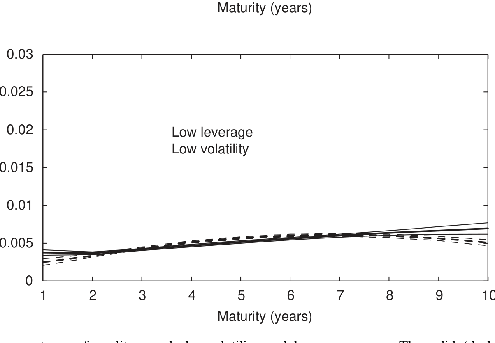
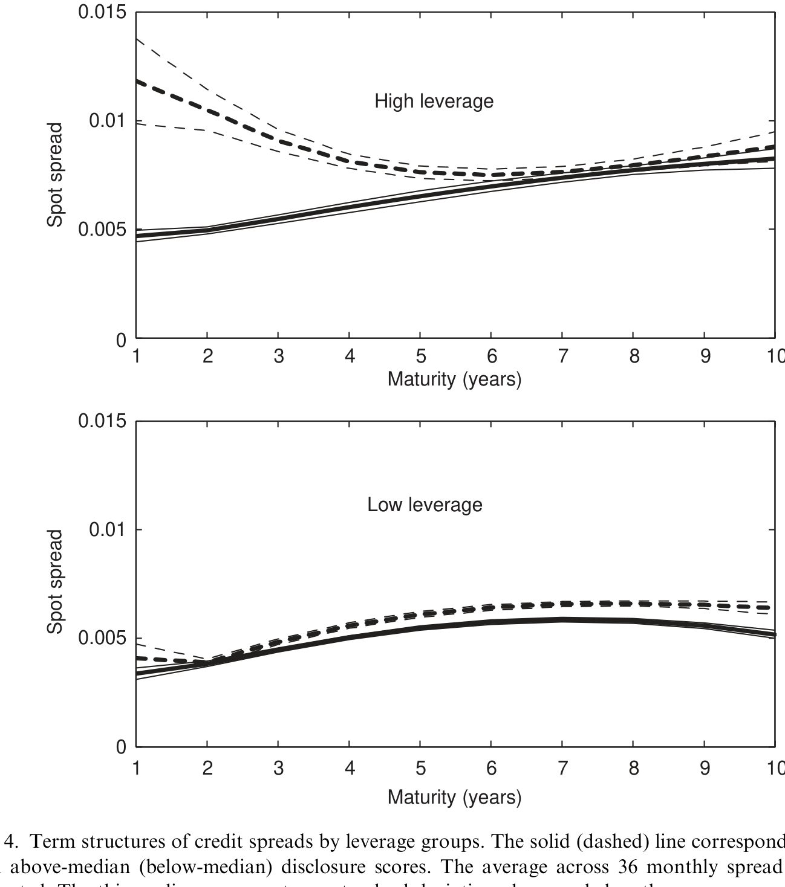
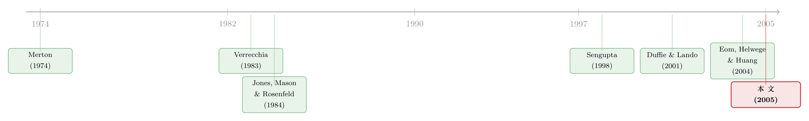

财报越「干净」，短债越便宜——一段被结构模型漏掉的信用利差
本文读的是 Fan Yu (2005, Journal of Financial Economics)：用 AIMR 公司披露评级度量「会计透明度」，作者发现披露越好的公司，其公司债信用利差越低；更关键的是，这块「透明度利差」在短期债上尤其大。这恰好对上了结构模型一直算不准的那个角落——短端信用利差之谜。
1 一个算了三十年都没算对的数
信用风险研究里，有一个问题被反复地问、却一直没被很好地回答：公司债的收益率利差，到底是由什么构成的？
自从 Merton（1974）把期权定价的思路搬进公司债、开创了所谓的结构化范式（structural model）以来，研究者们就一直试图用「违约风险」去解释利差的大小——可惜，几乎从未成功。早在 Jones、Mason 和 Rosenfeld（1984）那篇经典实证里，人们就发现 Merton 模型系统性地低估了一大批债券的利差。后来的各种改进版本把预测利差的水平抬高了一些，但系统性的定价误差始终阴魂不散。Eom、Helwege 和 Huang（2004）说得很直白：很多结构模型，依然低估短期债和较安全债券的利差。
于是，一个自然的转向出现了：也许利差里很大一块，压根就不是违约风险。
这方面的证据越攒越多。对投资级公司债，Elton 等（2001）估出大约 40 个基点的州税溢价；Perraudin & Taylor（2002）、Houweling 等（2002）估出大约 20 个基点的流动性溢价。Huang & Huang（2002）干脆把若干结构模型校准到历史违约率上，结论令人不安：信用利差里能归因于违约风险的，不到 25%；而且这个比例对垃圾债更高、对短期债更低。Jarrow 等（2001）从另一个角度看同一件事——债券隐含的违约概率，在长端跟历史估计对得上，在短端却高得离谱。
把这些放在一起，矛头都指向同一个地方：
短端的信用利差，是整个信用风险研究里最扎眼、最没被解释清楚的那一块。
本文要做的，就是去填这个坑里的一块砖——一块此前几乎被所有人忽略的砖：因为我们看不清公司的真实价值而产生的那部分利差。
2 结构模型的一个「作弊」假设
要理解这篇文章为什么重要，得先看清楚传统结构模型偷偷做了一个什么样的假设。
在 Merton 一脉的模型里，公司价值是一个可以被完美观测的扩散过程（diffusion process）。违约被定义为这个价值第一次跌到某条违约边界（default boundary）之下。问题就出在「完美观测」这四个字上：如果此刻我清清楚楚地看到公司价值离违约边界还有一段有限的距离，那么在接下来极短的时间 \(\Delta t\) 里它越过边界的概率是 \(o(\Delta t)\) 阶——比 \(\Delta t\) 还小。结果就是：当债券期限趋于零，信用利差也必然趋于零。
可现实里我们看到的短端利差，明明不是零。
但真正关键的一步，是 Duffie 和 Lando（2001）迈出的。他们的直觉简单得惊人：公司价值并不是被完美观测的，它是被「带噪声地、周期性地」报告出来的——也就是通过财报。投资者看到的是一份带误差的资产报告，外加「公司目前尚未违约」这一事实，由此只能推算出真实资产的一个条件分布。
这个分布的尾巴，藏着魔鬼：总存在一个不大不小的概率，真实价值其实就贴在违约边界附近，随时可能在极短时间内跨过去。Duffie & Lando 证明，这个机制足以把下一刻的违约概率从 \(o(\Delta t)\) 抬到 \(O(\Delta t)\) 阶——于是，零期限处冒出了一个正的信用利差。
我用一句话把两个世界对照一下：
$$ \lim_{T \to 0}\, s(T) = 0 \qquad\text{[complete information]} $$
$$ \lim_{T \to 0}\, s(T) > 0 \qquad\text{[noisy reports]} $$
噪声越大，那个正的极限就越高。这正是这篇文章的实证抓手。
3 模型：把「透明度」写成一个参数
Duffie & Lando 的设定可以浓缩成一个参数。投资者看到的报告资产，等于真实价值加上一个正态噪声项：
参数 \(a\) 就是透明度的反面：\(a\) 越小，财报越贴近真实价值，越「透明」。本文复现了 Duffie & Lando 的基准情形（base case），取报告资产为 86.3、违约边界为 78，让 \(a\) 分别取 0.01、0.05、0.10、0.25。
接着，一个自然的问题是：透明度的差别，会把利差期限结构「掰」成什么形状？
答案是：差别几乎全集中在短端。当 \(a = 0.01\)（近乎完美披露），利差随期限缩短一路压向零；而当 \(a\) 取较大值，短端的利差被顶起一个正的水平。但随着期限拉长，不同 \(a\) 对应的利差曲线又慢慢收拢到一起。用本文作者的话说，按常规参数，这道缝隙「只在期限小于大约三年时才变得可观」。
这里还埋着一个反直觉的彩蛋。Duffie & Lando 的设定里披露质量是外生的，可如果公司能自己选择披露什么呢？本文用一个场景点破了两套理论的分野（论文 Fig. 2 的 Panel D）：当当前财报远低于上一期、而真实价值其实很高时，模型会得出一个怪结果——更高的透明度反而对应更高的利差。直觉是：此时那份很低的报告更像是会计噪声造的「乌龙」，\(a\) 越大，条件分布的质量越往高处挪，利差反而下降。可在「相机披露」（discretionary disclosure）的世界里，这种情形根本不会发生——因为公司会主动选择不披露这个坏消息（关于「主动把坏消息说出口」这件事的张力，可参见《把坏消息主动说出口：当公司价值在随机游走，沉默反而更贵》）。这恰恰提醒我们：Duffie & Lando 模型缺了「披露是企业内生选择」这一块。
正因为模型建立在一堆把现实抽象掉的假设上（比如它给出的利差曲线大多是下斜的，而现实里通常上斜），作者很克制地没有去做结构估计，而是只把模型的定性预测拿去检验，凝练成两条假设：
- H1. 透明度越高的公司，信用利差水平越低。
- H2. 这块透明度利差，在短期债上更显著。
其中 H2 是 Duffie & Lando 独有的、此前从未被检验过的预言；它有可能成为撬开短端利差之谜的一根杠杆。
4 识别策略：两把尺子量同一件事
怎么把「透明度」这个看不见的东西量出来，又怎么把它和别的利差成分分开？本文用了两条互补的路。
透明度的度量（DISC）。 这是全文的根基。作者沿用一大批会计文献的做法，采用美国投资管理与研究协会（Association for Investment Management and Research, AIMR）每年发布的公司披露质量评级。每年，AIMR 挑选资深分析师组成行业小组，先商定要评的公司和评分标准，再由每位成员就年报、季报、投资者关系三个维度，按充分性、及时性、清晰度，给公司打 0–100 分，最后取均值汇总。为了让不同行业可比，作者把原始总分按行业转成百分位排名：
$$ \mathrm{DISC} = \frac{100 \times (\text{number of firms in industry} - \text{rank of score})}{\text{number of firms in industry} - 1} $$
这套数据覆盖 1979–1996 年、8,735 个公司-年观测、上百家公司、每年 30 多个行业——是能找到的最翔实的披露质量度量。
第一把尺子：横截面回归。 被解释变量是信用利差 CS（公司债到期收益率减去同期限国债收益率），核心解释变量是 DISC，并控制结构模型关心的变量——权益波动率 VOL、杠杆 LEV（定义为账面负债除以「权益市值 + 账面负债」）——以及流动性代理（发行规模、债券年龄）。期限结构效应则用一个关于期限的分段线性函数来刻画，让透明度在短、中、长三段上有不同的斜率。作者特意说明：之所以用横截面而非面板，是因为披露质量在时间序列上几乎不变，而利差的时序变动又主要被市场层面因素主导，会把公司层面的信号淹没。
第二把尺子：Nelson-Siegel 收益率曲线。 回归框架灵活但有两个软肋：它对非线性的期限结构效应捕捉有限，而且「到期收益率」本身并不是某一给定期限上债券风险的干净度量。于是作者按发行人的杠杆、波动率和披露评级把债券分组，对每组用 Nelson & Siegel（1987）方法估一条收益率曲线，再减去同法估出的国债曲线，得到一族利差曲线。把同样杠杆、同样波动率分组里「高披露」和「低披露」两组的利差曲线一摆，透明度对整条期限结构的影响就直观地显现出来了。
数据上，公司债与国债报价来自 Lehman Brothers Fixed Income Database（Warga, 1998），覆盖 1973–1998 年的月末买价；国债基准收益率从 1986 年起可得。
5 主要结果：短端那道豁口
结论与两条假设高度一致。
透明度确实压低利差，而且短端尤甚。 这正是 H1 与 H2 的双重确认。图 6 把这件事画得最清楚：在同样的波动率与杠杆分组内，高披露组（实线）的利差曲线整体低于低披露组（虚线），而且两条线之间的缝隙在短端张得最开、随期限拉长逐渐收拢——与 Duffie & Lando 模型预测的形状如出一辙。

Figure 6: Term structures of credit spreads by volatility and leverage groups. The solid (dashed) line
这块利差，不是评级能吸收掉的。 评级机构口口声声说自己已经把信息披露质量纳入了评级，所以作者干脆不用评级当控制变量，而是反过来检验这套说辞。结果如图 7 所示：在同一评级类别内部，把公司再按披露高低分组，高披露组的利差依然更低。换句话说，信用评级并没有把披露质量的信息榨干——透明度携带着评级之外的增量定价信息。

Figure 7: presents the results for the three rating categories. The differences between
这两张图合起来，把本文的核心讲完了：会计透明度是信用利差里一块独立存在、且偏向短端的成分。它不是流动性、不是税、也不是被评级打包掉的东西。
为什么这件事重要？因为短端正是结构模型一直算不准的地方。一块「短端为正、随期限衰减」的透明度利差，恰好能补上结构模型在短端低估利差的那道缺口——这是把会计披露和资产定价缝在一起的一针。
6 文献脉络
把这条线捋一捋，会看到两条本来各走各路的文献，在这篇文章里被接上了头。
一条是信用风险的结构模型：从 Merton（1974）的奠基，到 Jones、Mason、Rosenfeld（1984）发现它低估利差，再到 Eom、Helwege、Huang（2004）系统记录短端与安全债的低估——这条线一路在为「利差从哪来」发愁。真正的破局者是 Duffie & Lando（2001），他们把「不完全会计信息」塞进结构模型，第一次为正的短端利差给出了机制。
另一条是会计披露的经济学：相机披露理论从 Verrecchia（1983）起步，主张披露有成本时公司会藏私；实证上，Sengupta（1998）等用 AIMR 评级发现披露质量与债务成本负相关——但他们用的是发行时的报价、且忽略了期限维度，对「期限结构效应」无话可说。
本文站在这两条线的交汇点上：借 Duffie & Lando 给出的可检验预言（尤其是独一无二的 H2），用 AIMR 数据和二级市场收益率，第一次把透明度对整条利差期限结构的影响量了出来。

7 评论与延伸（Q&A + 研究方向）
(a) 几个可能的疑问
Q：DISC 是分析师打的分，会不会只是「业绩好、规模大」的代名词，从而内生？
这是最该担心的一点。Lang & Lundholm（1993）就发现 AIMR 评分随公司规模和业绩上升。所以作者强调「其他条件相同」——必须控制波动率、杠杆等横截面决定因素。但披露质量与这些特征确有相关，残余的内生性（比如好公司同时披露好、又利差低）很难单靠加控制变量根除。这是全文识别上最软的一环。
Q：既然评级声称已包含披露质量，凭什么说透明度是独立的一块？
作者把这句说辞当成可检验的命题，而非前提。做法是不拿评级当控制、反而在同一评级内部按披露分组（图 7）：若评级真的吸收了披露信息，组间利差不该有系统差异；而结果显示高披露组利差更低。所以评级与披露相关，但前者不是后者的充分统计量。
Q：短端利差高，会不会其实是流动性溢价而非透明度？
这正是要靠控制变量和分组来切分的。作者纳入发行规模、债券年龄作流动性代理；并且 Ericsson & Renault（2001）指出流动性利差的期限结构本身也可能下斜，确实是短端之谜的疑凶之一。把透明度从流动性里干净剥离，是这类研究永远的硬骨头（这块「流动性那一份」怎么拆，可参见《一个买卖价差，为什么越来越贵了？》）。
Q：为什么用二级市场收益率，而不是发行收益率？
因为本文关心的是债券定价，而非融资成本。Sengupta（1998）等用发行收益率。作者论证：发行往往伴随自利的披露，受逆向选择和柠檬问题困扰，发行收益率对透明度的敏感度会远高于二级收益率。所以用二级收益率，等于给透明度效应估了一个下界。
Q：相机披露和 Duffie-Lando 给出的预测一样吗？
在「水平」上一致——都预测透明度低则利差高（H1）。但在「期限结构」上未必。相机披露的期限效应取决于公司想藏的是什么：一次性冲击（如诉讼赔偿）主要抬高短端，而对盈利增长的长期负面展望主要抬高长端；加上正净值条款这类短债契约让公司没动机去藏「很快就得披露」的信息，所以相机披露反而更可能影响长端。H2（短端为主）才是 Duffie-Lando 独有的指纹。
Q：模型预测利差曲线下斜，现实却上斜，这不矛盾吗？
作者坦承这是 Duffie-Lando 的局限之一。补救办法是把那条平的违约边界换成随公司价值同速增长的边界（维持平稳杠杆，见 Collin-Dufresne & Goldstein, 2001），曲线就能转为上斜。这也是作者只取模型「定性预测」而拒绝做结构估计的原因——硬拟合那些被抽象掉的特征，容易把误设当成发现。
(b) 几个可能的研究问题与提案
1. 把「透明度利差」搬到现代公司债微观数据上重估。 【经济故事】本文用的是 1986–1998 的 Lehman 月末报价；TRACE 之后我们有了成交级别的数据，能更干净地区分流动性与透明度，并直接检验短端豁口是否仍在。【可行性】高。数据为 TRACE + Compustat/CRSP，透明度可用现代披露/可读性指标（如 10-K 文本复杂度）替代已停更的 AIMR；识别仍受内生性困扰，但样本与精度大幅改善。
2. 用一次外生的披露冲击做事件研究。 【经济故事】本文的横截面识别难脱内生。若能找到一次外生改变披露质量的监管（如某项强制披露新规的错时实施），看其对利差期限结构、尤其短端的冲击，就能把因果钉得更牢。【可行性】中。需要一个干净的错时政策 + 双重差分；难点在于政策往往同时影响多个变量，且要警惕期限结构本身的处理效应（这类陷阱可参见《期限结构会自己动：当双重差分撞上一条收益率曲线》）。
3. 透明度利差与外资持有人。 【经济故事】外国投资者对发行人的信息劣势更大，理论上对「会计透明度」更敏感。若按债券持有人国籍分组，透明度利差是否在外资持有比例高的债券上更大？这能把信息不对称的来源具体化。【可行性】中。需债券层面的持有人国籍数据（如部分托管/监管披露），匹配披露质量；样本覆盖是主要约束。
4. 把相机披露内生化后再上数据。 【经济故事】本文反复点出 Duffie-Lando 缺了「披露是内生选择」。一个把披露质量与时机当作企业最优选择的扩展模型，能区分「想藏短期冲击」与「想藏长期展望」两类公司，并预测不同的期限结构。【可行性】中偏低。理论扩展可做；实证上要把「公司藏了什么」分类并外生化，识别难度大。
5. 透明度与评级的「信息分工」。 【经济故事】既然评级吸收不了全部披露信息，那评级和披露各自定价了利差的哪一段、哪一类风险？把两者的增量解释力按期限和评级档拆开，能厘清评级机构那句说辞到底成立到什么程度。【可行性】高。横截面回归 + 分组即可，数据门槛低；主要是把识别讲干净。
8 参考文献
Collin-Dufresne, P., Goldstein, R. (2001). Do credit spreads reflect stationary leverage ratios? Journal of Finance 56, 1929–1958.
Duffie, D., Lando, D. (2001). Term structure of credit spreads with incomplete accounting information. Econometrica 69, 633–664.
Elton, E., Gruber, M., Agrawal, D., Mann, C. (2001). Explaining the rate spreads on corporate bonds. Journal of Finance 56, 247–277.
Eom, Y., Helwege, J., Huang, J. (2004). Structural models of corporate bond pricing: An empirical analysis. Review of Financial Studies 17, 499–544.
Jones, E.P., Mason, S.P., Rosenfeld, E. (1984). Contingent claims analysis of corporate capital structures: An empirical investigation. Journal of Finance 39, 611–625.
Lang, M., Lundholm, R. (1993). Cross-sectional determinants of analyst ratings of corporate disclosures. Journal of Accounting Research 31, 246–271.
Merton, R.C. (1974). On the pricing of corporate debt: the risk structure of interest rates. Journal of Finance 29, 449–470.
Nelson, C.R., Siegel, A.F. (1987). Parsimonious modeling of yield curves. Journal of Business 60, 473–489.
Sengupta, P. (1998). Corporate disclosure quality and the cost of debt. Accounting Review 73, 459–474.
Verrecchia, R.E. (1983). Discretionary disclosure. Journal of Accounting and Economics 5, 179–194.
Yu, F. (2005). Accounting transparency and the term structure of credit spreads. Journal of Financial Economics 75(1), 53–84.
我的总评：这篇文章的贡献是干净而克制的——它没有去强拟合一个充满简化假设的模型，而是抓住 Duffie-Lando 那条独一无二的预言（H2），用最翔实的披露数据把「透明度利差偏向短端」这件事第一次量了出来，并顺手证明评级吸收不掉它。这对结构模型的短端之谜是一个真实的、机制清楚的补充。最大的隐忧仍在识别：DISC 与公司质量、流动性高度相关，横截面回归很难把因果钉死，作者也只能用「下界」「其他条件相同」这样的措辞自我设限。我接下来最想看到的，是一次外生的披露冲击 + 现代成交级数据（TRACE）的复检——如果那道短端豁口在更干净的设定下依然存在，这块「透明度利差」才算真正立住了脚。